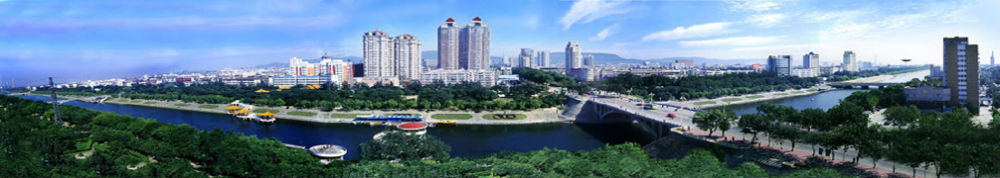

|
|||||
魅力鹰城
鹰城概况  平顶山市位于河南省中部，1957年建市，现辖2市4县4区，面积7882平方公里，总人口550万。2017年，全市完成生产总值2015.3亿元、一般公共预算收入137.5亿元。既是资源型工业城市，也是中国优秀旅游城市、国家园林城市、国家森林城市、国家卫生城市和省文明城市，还是中国曲艺城、中国书法城、中国观音文化之乡、中国汝窑陶瓷艺术之乡和中国唐钧基地。 自然资源丰富。已探明各类矿藏57种，其中原煤储量100亿吨，是中南地区最大的煤田；钠盐储量3300亿吨，是中国岩盐之都；铁矿石储量10亿吨，是全国十大优质铁矿之一。有各类水库169座，南水北调中线工程从我市穿境而过，有白鹭洲、白龟湖两个国家级湿地公园。旅游资源单体4200多个，居河南省第二位。尧山—中原大佛景区是国家5A级旅游景区，景区有绵延百里的温泉带和世界最高铜制立佛中原大佛，尧山地质公园是国家地质公园。平顶山博物馆、二郎山、灯台架、画眉谷、三苏园、尧山大峡谷漂流、香山寺等是国家4A级旅游景区。 历史文化深厚。西周时期为武王宗室应侯封地应国，应国以鹰为图腾，因此平顶山又称鹰城。境内全国重点文物保护单位25处，有千手观音证道祖庭香山寺、千年古刹风穴寺、国家重大考古发现汝官窑遗址、苏轼父子三人的安息地三苏园、全国保存最完整的明代县衙叶县县署、国家级非物质文化遗产马街书会，是河南曲剧的发源地和世界叶姓、刘姓、应姓、沈姓的祖籍地。 产业优势突出。拥有能源、化工、装备制造、冶金建材、轻工食品等支柱产业，正在打造国际新材料产业基地，培育壮大新能源、新医药、现代金融、全域旅游、现代物流、生态循环农业等产业。平煤神马集团、舞钢公司、平高集团、姚电公司、鲁阳电厂等一大批企业在全国同行业占有重要地位。被确定为第一批国家农业可持续发展试验示范区和国家农业绿色发展试点先行区，是全省唯一、全国40个之一。 基础条件较好。地处京广和焦枝两大铁路干线之间，距新郑国际机场100公里。兰南、宁洛、二广、郑尧、焦桐5条高速公路穿境而过。正在建设的郑万高铁从我市通过，并在城乡一体化示范区和郏县设站。拥有高等院校5所、省级以上各类研发平台147家，其中国家级企业技术中心4家、重点实验室1家、国家级科技企业孵化器1家、国家级星创天地1家，是全国科技进步先进市、国家知识产权试点市。 |
|||||
|